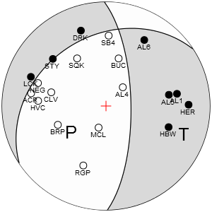
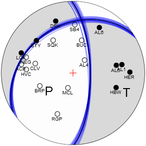
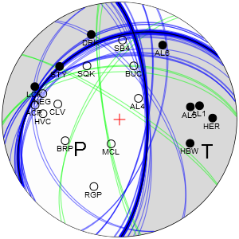
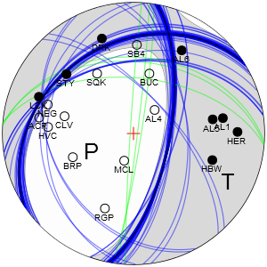
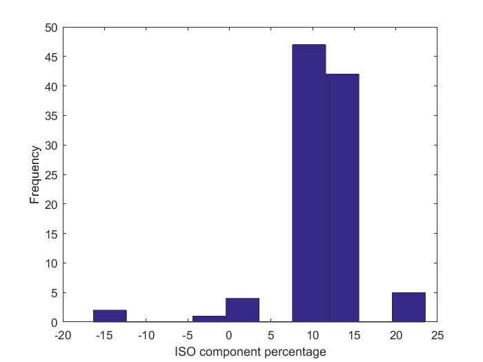
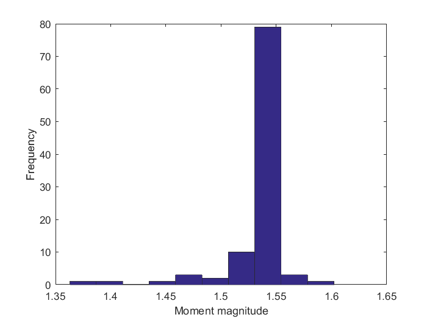

Quick start guide
Contents
Installation
The downloaded package should be firstly unpacked to a separate directory. In the following, it is recommended to add the location of the directory with the content of hybridMT package to MATLAB path. One can either do it through MATLAB interface (Home>Set Path in R2014b) or by calling the script hybridmt_install.m located in the root folder of hybridMT package. The script will add the location of root folder to MATLAB search path and also update the help search database with the documentation of hybridMT package.
Getting help/documentation
The package integrates with MATLAB help system and search database. Accessing hybridMT package help system may vary with different versions of MATLAB. In newest releases, the documentation is accessible by opening the MATLAB help system and clicking on Supplemental Software link located in the bottom part of the help homescreen:

resulting in opening the package help system:

Alternatively, the following command may be executed when current MATLAB folder is set to the directory where the package was installed:
doc -classic;
Older versions of MATLAB may integrate the hybridMT help with MATLAB documentation.
The help is also provided in a form of HTML files accompanying each function. For example, typing down:
help focimt;
FOCIMT Perform seismic full moment tensor inversion using fociMT software.
Use FOCIMT to perform the seismic moment tensor inversion using fociMT
software via MATLAB wrapper.
part of hybridMT package
<a href="matlab:open('html/doc_focimt.html')">Reference page for focimt</a>
provides the User with a short description of the routine. The User can follow the hyperlink that provides the extended documentation of the routine.
Finally, the hybridMT package provides a documentation in a form of PDF file located in the main directory.
Moment tensor inversion
The seismic moment tensor inversion may be performed by a direct call to command line application focimt or by calling the focimt.m routine. The latter routine is in fact a MATLAB "wrapper" to focimt allowing to easily specify the inversion parameters as well as to gather the moment tensor output.
The input moment tensor inversion data must be provided in a form of ASCII file following one of two available input formats handled by the package functions described in the manual later on. Examples of ASCII input files are located in /examples subdirectory of hybridMT package installation folder.
In the following, we use sample file example6a.txt located in /examples folder that is formatted according to 1D velocity model ASCII format. One can open the input file with any ASCII text editor:
71761660 19 4299668 514987 -2300 2700 AL4 Z P -5.837934028e-009 4298878 514278 661 MCL Z P -1.597535590e-008 4300663 515328 961 BUC Z P -1.974913194e-010 4297161 514321 888 BRP Z P -1.531125000e-008 4300690 517602 905 SQK Z P -5.010868056e-009 4297196 516487 639 CLV Z P -4.782118056e-009 4298866 518196 989 AL5 Z P 1.063269965e-008 4299029 511402 593 RGP Z P -3.901814236e-009 4303292 516370 799 SB4 Z P -1.578637153e-009 4295581 514832 327 HBW Z P 9.751050347e-009 4301085 510786 985 HVC Z P -2.176428908e-009 4299334 519405 779 AL1 Z P 7.571961806e-009 4298831 510115 704 NEG Z P -1.369678819e-009 4297989 519971 922 STY Z P 2.129661458e-009 4296077 519041 1112 AL6 Z P 1.136909722e-009 4294586 512040 749 ACR Z P -7.998354869e-010 4298682 520805 803 DRK Z P 1.260164931e-009 4293306 517103 757 HER Z P 1.906137153e-009 4299553 507480 668 LCK Z P 2.227144097e-009 4296783 522420 1166
The first line of the input file is Event Line containing basic information about seismic event. In this particular case the 71761660 reflects event ID number followed by number of phases (26) and location of earthquake in local cartesian coordinate system (Northing = 4299447 meters, Easting = 515161 meters, Z = -2460 meters). The last value corresponds to the rock density in hypocentral area (2900kg/m^3).
The event line is followed by limited (in this particular case 26) phase lines containing phase information. Each phase lines contains information on station name ('AL4'), component and phase type ('Z' and 'P'), area below the first pulse of the phase onset (=spectral level, = proportional to seismic moment) together with sign information, and finally location of stations in Cartesian coordinate system.
The ASCII input file may contain multiple blocks event line - phase_lines allowing performing the moment tensor inversion for many earthquakes at once. More details on the format of the input files is presented in section Input focimt ASCII file formats of the main manual.
This type of input file assumes the User provide the 1D velocity model to perform the 1D ray-tracing and calculate auxiliary parameters necessary for the moment tensor inversion such as the takeoff angles, incidence angles and distance along the ray path (the latter is necessary to calculate the seismic moment). We therefore prepare the velocity model first:
VELOCITYMODEL = [0.00 3.00 8.00 20.00 22.00; 4.10 5.47 5.75 6.02 7.90]'; stairs(VELOCITYMODEL(:,2),VELOCITYMODEL(:,1),'-','LineWidth',2); ylabel('Layer top [km]'); xlabel('Velocity [km/s]'); set(gca,'YDir','reverse');
Having the input file and the 1D velocity model, the moment tensor inversion (using defaut inversion options) can be performed easily by executing the focimt routine:
Solution = focimt('examples/example6a.txt','VelocityModel',VELOCITYMODEL,'BeachBallFormat','PNG');
The velocity model for the moment tensor inversion with the ASCII file above was provided by auxiliary parameter VelocityModel. The additional parameter BeachBallFormat allows to create a graphical representation of the seismic moment tensor inversion in a form of beach ball plot. By default, three moment tensors are calculated:
- Unconstrained (full) moment tensor solution,
- Deviatoric moment tensor solution (no volumetric change in the source, i.e. ISO = 0, CLVD+DC), and
- Double-couple moment tensor solution (no volumetric change in the source, no linear dipole, ISO = 0, CLVD = 0, DC).
The detailed information on the inversion method used as well as the moment tensor decomposition scheme used in the package is presented in section Theoretical background of the main manual.
Setting the second auxiliary parameter BeachBallFormat to 'PNG' results in generation of three PNG images representing uncostrained, deviatoric and double-couple solutions. Other image formats such as PDF, SVG and PS are available by modification of BeachBallFormat.
Double-couple solution (ISO = 0%, CLVD = 0%):

Deviatoric solution (ISO = 0%):

Full solution:

By default, the generated beach ball contains center cross, best double-couple nodal lines, station locations on the focal sphere, location of P and T axes and center cross. Each of these elements may be switch on or off by modification of PlotCross, PlotDC, PlotStations and PlotAxes properties. Also, the projection type (equal area/equal angle) as well as projection hemisphere (lower/upper) can be adjusted to User preferences by modification of Projection and Hemisphere properties. Finally, the size of output image(s) can be modified by BeachBallSize property.
Getting parametric output data
The moment tensor solution is returned as cell array:
Solution
Solution =
[1x1 struct]
Each cell array element corresponds to resulting moment tensor from a single earthquake. For example, to access the moment tensor solutions (full, deviatoric, and double-couple solutions) of the first earthquake we can use the indexing operator. Using the moment tensor solution from example above, this can be done by calling:
Solution{1}
ans =
event_id: '71761660'
n_trials: 1
calculation_dt: 7.3628e+05
full: [1x1 struct]
deviatoric: [1x1 struct]
dc: [1x1 struct]
Each element of the cell array is a structure array containing basic information on earthquake (event_id, n_trials, and calculation_dt) and three structures containing output parameters of calculated unconstrained full, deviatoric and double-couple constrained moment tensors (full, deviatoric and dc structures). For example, to access the output parameters of the full moment tensor solution of the first earthquake one may type:
Solution{1}.full
ans =
Type: {'N'}
STATION_ID: 0
ISO: 11.63
CLVD: 3.9735
DC: 84.397
M0: 2.253e+11
MT: 2.3707e+11
M0ERRMAX: 6.7724e+09
MW: 1.5385
P: [246.78 61.337]
T: [116.91 19.311]
B: [19.453 20.33]
F1: [10.517 67.255 -112.13]
F2: [236.97 31.319 -48.056]
Fault: {'NF'}
MXX: [1x6 double]
CXX: [1x6 double]
RMSERROR: 0.25025
Station: {1x19 cell}
UMEASURED: [1x19 double]
UTH: [1x19 double]
The elements of moment tensor solution structure array are generally self-explanatory (more details on meaning of all parameters is presented in section Output focimt cell array formats of the manual). For example, the orientation of the two fault planes is stored in variables F1 and F2 as [strike dip rake] triplets. Similarly, the orientation of P, T, B cardinal axes is formatted as [trend plunge]. The scalar and total seismic moment is stored in M0 and MT variables. The detailed overview of all output parameters is presented in section Output focimt cell array formats of the manual.
Quality assessment
Each moment tensor solution structure array contains two direct parameters corresponding to the quality of the seismic moment tensor inversted:
- RMS error between observed and predicted amplitudes. The value is stored in RMSERROR variable.
- Maximum error of the seismic moment calculated as the square root of the maximum element of covariance matrix. The value is stored in M0ERRMAX variable.
For example, the deviatoric solution of the moment tensor solution calculated previously has RMS error and maximum error:
Solution{1}.deviatoric.RMSERROR
ans =
0.30186
and
Solution{1}.deviatoric.M0ERRMAX
ans = 6.4676e+09
The package allows to perform two other types of quality assessment of the seismic moment tensors:
- Station Jacknife test
- Bootstrap resampling
In Station Jacknife Test the seismic moment tensor inversion is firstly performed with all phases available. In the second step, the inversion is repeated with one phase removed from the input data. The second stage is repeated for every phase. The resulting moment tensor contains one solution with all phases used and n auxiliary solutions (where n is the number of phases). This procedure allows to detect potential bias introduced by a single phase (or station) to the moment tensor solution (for example bad gain or bad polarity of the station).
The Station Jacknife test mayb be toggle on by modyfication of the Jacknife property of focimt routine. In the following example we perform the station Jacknife test using the same input file as before:
JacknifeSol = focimt('examples/example6a.txt','VelocityModel',VELOCITYMODEL, ... 'BeachBallFormat','PNG','Jacknife','on','ProjectDir','jtest');
This time we stored the results in the project folder specified by ProjectDir parameter and we additionally turned on the Jacknife station test.
The generated graphical representation of the seismic moment tensors for full, deviatoric and double-couple moment tensors look as follows:
Double-couple solution (ISO = 0%, CLVD = 0%):

Deviatoric solution (ISO = 0%):

Full solution:

The tensor shading and black nodal lines corresponds to the moment tensor solution calculated with all phases (stations). The blue lines correspond to nodal lines calculated with Jacknife method. The color of the Jacknife lines depicts the sense of fault motion. Blue, green and red nodal lines correspond to the normal, strike-slip and thrust faulting. In the example above the moment tensor solution is very stable and removing of random one station in general does not affect the solution nearly at all.
The second type of uncertainty assessment is possible throught bootstrap resampling of the original catalog. In bootstrap resampling, the original input phase data is used to generate n derived input phase data. For each bootstrap sample the user may specify three different procedures that will randomly modify input phase data: 1) Phase polarity resampling, 2) station rejection resampling and 3) amplitude resampling. In the following example we focus on phase polarity resampling. In this type of resampling, on average m*100 percent of randomly selected phases in each bootstrap-resampled input phase data will have polarity reversed. The bootstrap resampling parameters are handled by Bootstrap option followed by a 1-by-2 to 1-by-4 elements vector where first number correspond to the number of bootstrap resamplings and second number specifies what is the average fraction of polarities to be reversed in each randomly resampled input dataset. For more details on other resampling procedures, see the description of focimt.m routine.
In the following example we generate 100 bootstrap resamplings of the input phase dataset assuming that about 1% of input phase data in each bootstrap sample may have reversed polarities:
BootstrapSol = focimt('examples/example6a.txt','VelocityModel',VELOCITYMODEL, ... 'BeachBallFormat','PNG','Bootstrap',[100 0.01],'ProjectDir','btest_n01');
This results in the following distribution of uncertainties of the fault plane estimation:
Double-couple solution (ISO = 0%, CLVD = 0%):

Deviatoric solution (ISO = 0%):
Full solution:

Both Station Jacknife Test and Bootstrap resampling generate a set of seismic moment tensor solutions. This set is obviously returned in output cell array. For example, while accessing the full moment tensor solution from bootstrap resampling method one can realize that the output parameters are now matrices with the number of rows corresponding to the total number of bootstrap resamplings plus one additional row corresponding to the original solution with original input data:
BootstrapSol{1}.full
ans =
Type: {101x1 cell}
STATION_ID: [101x1 int32]
ISO: [101x1 double]
CLVD: [101x1 double]
DC: [101x1 double]
M0: [101x1 double]
MT: [101x1 double]
M0ERRMAX: [101x1 double]
MW: [101x1 double]
P: [101x2 double]
T: [101x2 double]
B: [101x2 double]
F1: [101x3 double]
F2: [101x3 double]
Fault: {101x1 cell}
MXX: [101x6 double]
CXX: [101x6 double]
RMSERROR: [101x1 double]
Station: {1x19 cell}
UMEASURED: [101x19 double]
UTH: [101x19 double]
The type of solution can be easily recovered by inspecting the Type element of moment tensor solution structure:
[BootstrapSol{1}.full.Type{:}]
ans = NBBBBBBBBBBBBBBBBBBBBBBBBBBBBBBBBBBBBBBBBBBBBBBBBBBBBBBBBBBBBBBBBBBBBBBBBBBBBBBBBBBBBBBBBBBBBBBBBBBBB
In the example above 'N' corresponds to [N]ormal (original) solution from input dataset provided and 'B' denotes bootstrap-resampled solution (J corresponds to Station Jacknife Test solution).
Having the boostrap resampling one can investigate the uncertainties of various parameters. For example, to plot the distribution of deviatoric component of resampled dataset:
hist(BootstrapSol{1}.full.ISO);
xlabel('ISO component percentage');
ylabel('Frequency');
 The following example plots the uncertainties of moment magnitude:
hist(BootstrapSol{1}.full.MW);
xlabel('Moment magnitude');
ylabel('Frequency');
 Handling multiple events at once
So far we discussed the moment tensor inversion of a single earthquake. However, the hybridMT package allows to process multiple events at once. As an example, let's perform the moment tensor inversion for 90 events using the sample data located in /examples directory and default processing parameters:
MultipleEventsSolution = focimt('./examples/example3.txt');
The resulting MultipleEventsSolution cell array contains 90 elements corresponding to 90 moment tensors calculated, one for each earthquake. Now, to access the results of a particular moment tensor inversion we have to use indexing operator. For example, to access the 5th solution, one should use the followind code:
MultipleEventsSolution{5}.full
ans =
Type: {'N'}
STATION_ID: 0
ISO: -41.123
CLVD: -31.527
DC: 27.35
M0: 5.6378e+14
MT: 7.3059e+14
M0ERRMAX: 2.4521e+13
MW: 3.8041
P: [329.94 58.774]
T: [154.38 31.15]
B: [63.19 1.9677]
F1: [62.706 76.178 -92.026]
F2: [251.13 13.967 -81.821]
Fault: {'NF'}
MXX: [1x6 double]
CXX: [1x6 double]
RMSERROR: 0.33807
Station: {1x14 cell}
UMEASURED: [1x14 double]
UTH: [1x14 double]
that provide us with results of full moment tensor inversion for the 5th seismic event.
Consider a scenario when we want to extract values of isotropic component from full moment tensor for ALL earthquakes, for example in order to plot the statistics of isotropic component of the analyzed dataset. In other words, we would like to extract the value of ISO variable in full moment tensor solution structure array full for each element of output cell array. This is quite complicated in general, however the hybridMT package provides a convenient function getsolution.m to handle such case.
The following code will extract the amount of isotropic component of full moment tensors for all 90 events from the output cell array:
ISO = getsolution(MultipleEventsSolution,'full','ISO');
This will result in a vector composed of 90 elements where each element corresponds to the amount of isotropic component from all 90 earthquakes for which the full seismic moment tensor was calculated. This can be used for plotting the statistics of various parameters for the inverted dataset, e.g.:
hist(ISO)
willl display the distribution of isotropic components in the analyzed dataset.
In principle, more parameters can be extracted from the output cell array at once. For example, to extract the moment magnitude and orientation of P axes for the deviatoric moment tensor solutions of all analyzed earthquakes, the following code may be executed:
[MW,P] = getsolution(MultipleEventsSolution,'deviatoric','MW','P');
It is important to note that the order of input parameters ('MW','P' in the example above determines the order of output parameters located on the left side of the formula. Also, the names of input parameters to extract must correspond to the names of variables in the ouput structure array!
The function may be also used to extract general output data outside of 'full', 'deviatoric', and 'dc' structures inside of each cell array element. For example, the general data contains the ID number of events:
MultipleEventsSolution{1}
ans =
event_id: '004-03781'
n_trials: 1
calculation_dt: 7.3628e+05
full: [1x1 struct]
deviatoric: [1x1 struct]
dc: [1x1 struct]
Finally, the routine works also for general output data. For example, to extract all ID numbers, the following code may be used:
ids = getsolution(MultipleEventsSolution,'deviatoric','event_id');
In this case, the second parameter ('deviatoric') is of no use, but still it must be set up to either 'full', 'deviatoric', or 'dc'.